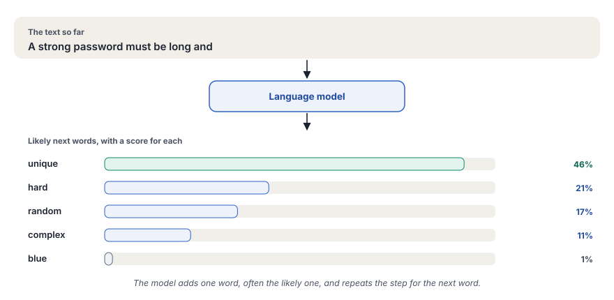

A generative AI app sends your text to a language model and shows the answer. LangChain gives you ready parts for such an app, so that you write less code and can change the model easily.
What you will learn
- How this track works and what you need for it
- What a large language model is, and why it can write fluent text that is still wrong
- What LangChain is, and which parts of an AI app it gives you
- How to set up the project that every chapter uses
You need basic Python. You do not need any earlier knowledge of AI.
About this track
In this track, you will build small AI apps with Python and LangChain. You will start with one question to a model. Chapter by chapter, you will add a web page, prompt templates, chains and a memory. Later chapters will add agents, documents and images. The last chapter will put your app online.
Each chapter adds one new part, so that you learn one idea at a time and always have an app that works. The examples come from security work, such as an app that explains a permission. The same steps work for any topic, so you can change the examples to your own field.
Every app in this track runs on Ollama, a free tool that runs language models on your own computer. You do not need a paid account. Later, each chapter will also show the app with Gemini and OpenAI, so that you can compare a local model with a cloud model.
How to work through this track
Read the chapters in order, because each chapter uses the app from the chapter before. In each chapter, read the idea first and look at the diagram. Then type the code yourself, step by step. Typing the code helps you to remember it better than copying it.
After each step, run the program and compare your result with the screenshot in the chapter. A language model does not always give the same answer, so your text can be different. The layout of the page and the type of answer will be the same.
Requirements
- A computer with Windows, macOS or Linux and at least 8 GB of memory, so that the local models can run
- About 10 GB of free disk space for Anaconda, the packages and two models
- Basic Python, such as variables, functions and imports
- A code editor, such as Visual Studio Code
- Git, so that you can keep your project in a repository
Source code
The full code of every chapter is in the repository bhardwajAbhi/learning-langchain on GitHub. Each chapter has its own folder in code/, and the number of the folder is the number of the chapter. For example, the code of chapter 5 is in code/05_using_prompt_template. Each folder also has a screenshot of the running app, so that you can compare your result.
What a large language model is
A large language model (LLM) is a program that learned from a very large amount of text, such as books, websites and code. From that text, it learned which words usually follow other words. When you give it a text, it predicts the next word, adds that word and predicts again. It repeats this step until the answer is complete.

This method explains two things that you will see in every chapter. First, the answers read well, because the model learned how good text looks. Second, an answer can be wrong, because the model predicts likely words and does not look up facts. You will see such a wrong fact in chapter 5.
A model also has no memory between two questions. Each question starts fresh. In chapter 8, you will give your app a memory, so that it can follow a conversation.
What LangChain is
LangChain is a Python library for apps that use language models. It gives you two things.
The first is one common way to talk to many models. Gemini, OpenAI models and local models through Ollama all have their own interface. In LangChain, you call each of them with the same method, invoke(). You can then change the model by changing one line, and the rest of your app stays the same.
The second is a set of building blocks for the parts around the model. A prompt template keeps your instructions in one place. A chain joins several steps into one. A memory keeps the conversation. You will learn each block in its own chapter, so that you understand what it does before you combine it with others.
The parts of a generative AI app
Every app in this track has the same four parts. The user types a question on a web page. Your program turns the question into a good prompt and sends it to the model. The answer then travels back the same way.

Chapters 1 to 3 connect your program to a model. Chapter 4 adds the web page. From chapter 5 on, your program grows, part by part.
Set up your project
Every chapter runs in the same project, so you set it up only once. You will create a separate Python environment, install the packages and the models, and create the files that keep your keys safe. At the end, you will run a quick check, so that you know that everything works before chapter 1.
![A folder named learning-langchain holds the files .env, .env.sample, .gitignore and requirements.txt and a folder named code. The .env file holds your real API keys and Git never uploads it. The .env.sample file has the same names with empty values, to share. The .gitignore file lists the files that Git must not upload. The requirements.txt file lists the packages and their versions. The code folder has one folder for each lesson, such as 03_using_ollama and 05_using_prompt_template, each with an app_ollama.py file. The folder number is the chapter number.](../../assets/img/diagrams/lc-start-layout.svg)
Step 1Install Anaconda
Anaconda manages Python and its packages. It gives each project its own environment, so that the packages of one project do not break another project. Download Anaconda from anaconda.com/download and install it. Then open a new terminal and check the installation.
conda --versionOn Windows, use the Anaconda Prompt as your terminal. On macOS and Linux, use the normal terminal. The command shows the version of conda, such as conda 24.9.2.
Step 2Create the environment
Create an environment with the name langchain and Python 3.11. Then activate it.
conda create -n langchain python=3.11
conda activate langchain
python --version-n langchaingives the environment its name. You will use this name each time you activate it.python=3.11installs Python 3.11 in the environment. The packages of this track need Python 3.10 or later.conda activate langchainmakes this environment the active one. Your terminal then shows(langchain)at the start of the line.python --versionmust showPython 3.11and a number after it.
Each new terminal starts without the environment. Run conda activate langchain before you run any program of this track. Most errors at the start come from a terminal where the environment is not active.
Step 3Create the project folder
Create the folder of the project with a code folder inside it. Then make the project folder a Git repository, so that you can save each step of your work.
mkdir learning-langchain
cd learning-langchain
mkdir code
git initRun all commands of this track from this folder, the root folder of the project.
Step 4Install the packages
In the root folder, create the file requirements.txt with this content.
langchain-core==1.7.0
langchain-community==0.4.2
langchain-ollama==1.1.0
langchain-google-genai==4.4.2
langchain-openai==1.7.3
streamlit==1.66.1
python-decouple==3.8langchain-coreholds the building blocks, such as prompt templates, chains and output parsers.langchain-ollama,langchain-google-genaiandlangchain-openaiconnect LangChain to Ollama, Gemini and OpenAI.langchain-communityholds extra parts, such as the chat history that you will use in chapter 8.streamlitmakes the web pages, from chapter 4 on.python-decouplereads your API keys from the.envfile.- Each package has a fixed version after
==, so that your project uses the same versions as this track.
Install all packages into the active environment.
pip install -r requirements.txtThe installation takes a few minutes. Anaconda keeps the packages inside the langchain environment, so they do not change other Python projects on your computer.
Step 5Create the files for your keys
Chapters 1 and 2 use cloud models, and each cloud model needs an API key. An API key is a secret text that identifies you to the service, so that the service knows whom to charge. You keep it in a .env file and never put it in your code.
First, create the file .env.sample. It lists the names of the keys with example values, so that other people know which keys the project needs.
GOOGLE_GEMINI_KEY='Your Key Here'
OPENAI_KEY='Your Key Here'Then copy it to .env. You will write your real keys in this copy in chapters 1 and 2.
cp .env.sample .env # macOS and Linux
copy .env.sample .env # WindowsStep 6Tell Git what to ignore
Create the file .gitignore in the root folder. Git reads this file and does not save the files that it lists.
.DS_Store
.env
__pycache__
.venv
.vscode.envkeeps your real keys out of the repository, so that nobody can read them on GitHub..venvand__pycache__are files that Python creates. Anyone can make them again, so they do not belong in the repository..DS_Storeand.vscodeare files of macOS and of Visual Studio Code.
Step 7Install Ollama and download the models
Download Ollama from ollama.com/download and install it. On Windows and macOS, Ollama then runs in the background. On Linux, the install script starts it as a service.
Then download the two models that this track uses.
ollama pull gemma:2b
ollama pull mistral
ollama listgemma:2bis a small model from Google, about 1.7 GB. It runs well on a normal laptop, so most chapters use it.mistralis a larger model, about 4 GB. Chapter 4 uses it.ollama listshows the models on your computer. Both names must be in the list.
To try a model directly, ask it a question in the terminal.
ollama run gemma:2b "Say hello in one short sentence."Step 8Check the setup
Run this command in the active environment. It imports the main packages and prints one word if they load.
python -c "import langchain_core, langchain_ollama, streamlit; print('Ready')"ReadyStep 9Learn how to run a lesson
The lessons of this track run in two ways. A lesson that prints to the terminal runs with python, such as the lesson of chapter 3.
python code/03_using_ollama/app_ollama.pyA lesson with a web page runs with streamlit run. Streamlit starts a small web server and prints its address.
streamlit run code/05_using_prompt_template/app_ollama.py You can now view your Streamlit app in your browser.
Local URL: http://localhost:8501
Network URL: http://192.168.1.20:8501Open the Local URL in your browser, if Streamlit does not open it for you. The page then shows the app. The Network URL is for other devices on the same network, and its numbers depend on your network. To stop the app, press Ctrl+C in the terminal.
If something fails
| What you see | Cause | Fix |
|---|---|---|
conda is not found | The terminal does not know Anaconda | On Windows, use the Anaconda Prompt. On macOS and Linux, open a new terminal after the installation. |
ModuleNotFoundError | The environment is not active | Run conda activate langchain and try again. |
httpx.ConnectError and "Connection refused" | Ollama does not run | Start the Ollama app, or run ollama serve in a second terminal. |
| An error that the model is not found | The model is not downloaded | Run ollama pull gemma:2b or ollama pull mistral. |
| Streamlit shows port 8502 and not 8501 | Another app uses port 8501 | Use the address that Streamlit prints, or stop the other app. |
An API key works like a password that can cost money. Keep it only in .env, and check that .gitignore lists .env before your first commit. If a key reaches GitHub by mistake, delete the key in the account of the provider at once and make a new one. Removing the file from the repository is not enough, because the old commit still holds the key.
Check yourself
Why does an answer from a language model sometimes sound right and still be wrong?
The model predicts likely words from the text that it learned. It does not look up facts, so a fluent answer can contain a wrong fact.
What does LangChain give you that a direct call to one model does not?
One common way to call many models, so that one line changes the model. It also gives building blocks, such as templates, chains and memory.
You open a new terminal and get ModuleNotFoundError. What is the most likely cause?
The langchain environment is not active in the new terminal. Run conda activate langchain.
Key terms at a glance
| Term | Meaning |
|---|---|
| Large language model (LLM) | A program that learned from a large amount of text and writes text by predicting the next word |
| LangChain | A Python library with one common interface to many models and building blocks for AI apps |
| Anaconda environment | A separate set of Python and packages for one project, so that projects do not affect each other |
| Ollama | A free tool that runs language models on your own computer |
| API key | A secret text that identifies you to a cloud service |
.gitignore | A file that lists the files that Git must not save, such as .env |
| Local URL | The address of your Streamlit app on your own computer, such as http://localhost:8501 |
Next
Your project is ready. Chapters 1 and 2 will connect your program to Gemini and OpenAI, and they will come soon. Until then, continue with chapter 3, where you will send your first question to a model on your own computer.